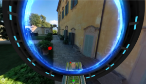

Who we are Take me to the project
The AR (Augmented Reality) Garden Tour is designed to bring the sights, sounds, and history of Villa La Pietra to visitors who cannot access it in person, as it is difficult to understand the size and layout of this historic house and its grounds. Villa La Pietra, which is part of NYU's Florence, Italy campus, spans over 35 acres and is spread out across 5 villas. It is wholly inaccessible to most visitors due to an abundance of gravel paths, steep steps, and extreme summer heat.
While walking the Villa La Pietra grounds, it became clear that there was a real need to find a way to make the Garden more accessible to individuals with differing physical abilities, and to engage more of the senses than with simply an audio tour. The AR Garden experience allows visitors to "walk" the Garden virtually; listening to the atmospheric sounds of the fountains and cicadas, and learn about the rich history of the Garden and grounds..
